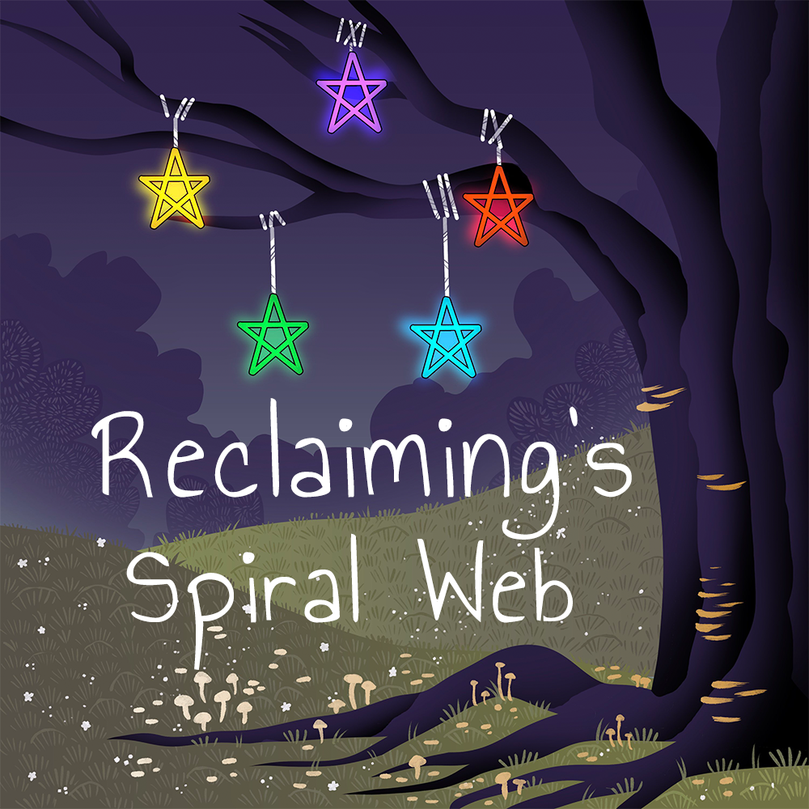

We are a lore-keeping project documenting oral histories of the Reclaiming Tradition of witchcraft.
Our show is currently recording our first season, and we will begin airing episodes once the season is edited. In the meantime, your support on our Patreon and social media is greatly appreciated!
Our episodes are available on YouTube and assorted podcasting platforms.



Where to connect